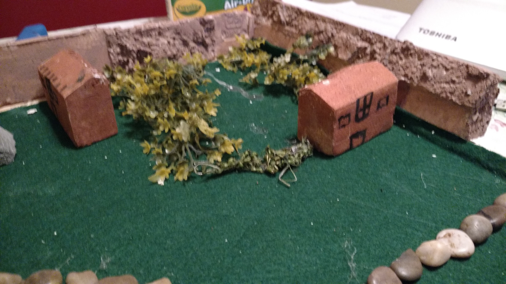

- Home
- Social
- Political
- intulectual
- Economic
- City monument
- City center
- Mythology Story
- superhero story
- Citations
Political
1. Where is the center of power?
The church of the Cthulhu
2. How do you defend your city?
We have a highly trained army for protection from outer threats.
3. What is the role, location etc. of your military?
It's a large military facility that contains the soldiers
4. How do you keep your city safe? Do you?
We have a large army that is trained to protect the society.
5. What is the government structure and how is power distributed and managed?
-The higher monks call the shots
-Government follows the 4 high monks.
-The lu’kthuluism leaders follow the religion and makes sure all citizens participate.
- Then comes the soldiers to provide protection
-The low class and legal property of the government are at the bottom
gets
6. Who gets to be a citizen? What role do they play?
Everyone is a citizen but the Legal Government Biological Trader. (LGBT) does not get paid.
7. What are some sample laws from your government? Your -laws need to reflect from the government we created?
Pray to Lu’kthulu in the church everyday in the church.
If you do not pray then you will be punished by the monks.
If a man destroys the eye of another man, they shall destroy his eye.
If a man knock out the tooth of a man of his own rank, they shall knock out his tooth.
If a physician operate on a man for a severe wound with a bronze lancet and cause the man's death or open an abscess in the eye of a man with a bronze lancet and destroy the man's eye they shall cut of his fingers
-
8. Laws that govern behavior (Moral codes) and laws that manage resources such as property.
Modification of the code of Hammurabi, Theocracy
Example Theocracy (Egypt) Limited Democracy (Athens) Oligarchic (Sparta) Confucianism (China)
Cartwright, Mark Cartwright. "Sparta." Ancient History Encyclopedia. N.p., 28 May 2013. Web. 08 Feb. 2017. History.com Staff. "Sparta." History.com. A&E Television Networks, 2009. Web. 08 Feb. 2017. 